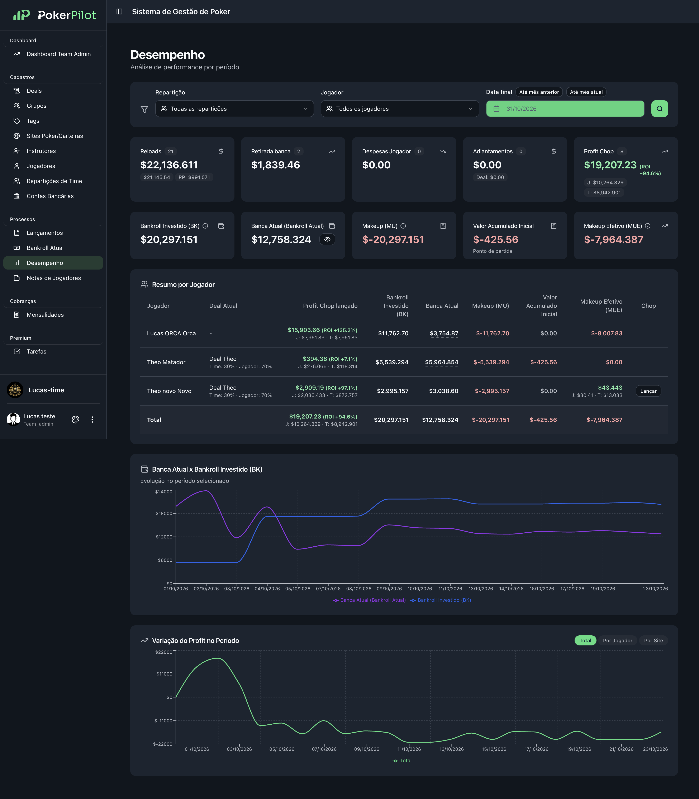

Informações espalhadas
Planilhas, anotações e grupos de WhatsApp ou Discord para fechar todas as pontas da operação.
Tarefas, mentorias e resultados em um só painel.
Menos tempo na operação. Mais clareza para o próximo passo.

Quando cada informação está em um lugar, enxergar o todo fica mais difícil. Sua operação merece acompanhar o nível do seu time.
Planilhas, anotações e grupos de WhatsApp ou Discord para fechar todas as pontas da operação.
Relatórios pouco claros e tempo demais procurando o que realmente faz diferença nos resultados.
Tarefas, evolução dos jogadores e pontos de atenção sem uma visão simples e compartilhada.
Uma operação profissional começa com uma visão clara.
Veja como o PokerPilot otimiza sua gestão na prática.
Uma plataforma. Menos pontas soltas.
Gestão, pagamentos e acompanhamento. Cada ação com seu responsável, prioridade e próximo passo.
Notes individuais por jogador para registrar alinhamentos, acompanhar a evolução e planejar os próximos passos.
Enxergue o desempenho do time e dos jogadores, os resultados e a evolução ao longo do tempo.
Alertas sobre os parâmetros de saúde do time para ajudar você a identificar o que precisa de atenção.
Mais visibilidade do próprio desempenho e dos próximos passos, em sintonia com as metas do time.
Atendimento em português, via WhatsApp e e-mail, para dúvidas de gestão e uso da plataforma.
Composições ilustrativas das funcionalidades. Veja a interface real na seção PokerPilot por dentro.
Nossa equipe cuida da migração, conduz o treinamento e acompanha você na adaptação. Seu time segue em frente. Sua gestão também.
Um profissional dedicado cuida da migração dos dados e históricos. Você não precisa começar tudo do zero.
Migração assistidaOnboarding guiado para você e sua equipe, com treinamento aplicado à rotina do time.
Treinamento na práticaSuporte em português via WhatsApp e e-mail, durante a adaptação e no dia a dia.
Suporte nacionalUma estrutura pensada para quem já tem um time rodando. A sensação é de evolução.
Continuidade para o seu timeEspaço reservado às histórias dos times.
Prévia editorial · depoimentos reais pendentes
A migração foi muito mais simples do que eu imaginava. Em poucos dias já estávamos com tudo rodando.
Hoje consigo ver em minutos o que antes levava horas de planilha: desempenho, caixa e pontos de atenção.
O time de suporte é rápido e fala a nossa língua. Qualquer dúvida na adaptação foi resolvida pelo WhatsApp.
Uma mensalidade em dólar por jogador ativo.
Quanto maior o time, menor o valor por jogador.
Escolha a quantidade de jogadores ativos e veja o valor mensal em dólar.
Digite um número inteiro de 1 a 100.000 jogadores.
30 jogadores × US$ 5,89 por mês
O valor da faixa se aplica a todos os jogadores ativos do time. Cobrança mensal em USD.
Demonstração gratuita, com nosso time.| Jogadores ativos | Por jogador / mês |
|---|---|
| 01 1 a 10 | US$ 10,69 |
| 02 11 a 30 | US$ 5,89 |
| 03 31 a 100 | US$ 3,89 |
| 04 101 a 200 | US$ 2,89 |
| 05 201 a 300 | US$ 2,49 |
| 06 301 ou mais |
Valores em USD. Condições e enquadramento apresentados na demonstração.
Consultoria personalizada para iniciar ou aperfeiçoar seu time, com profissionais do mercado de poker. Serviços contratados à parte, conforme o escopo.
Resultados, caixa e informações dos jogadores são parte importante da sua operação. Conheça as práticas de acesso, proteção e tratamento de dados durante a demonstração.
O que você precisa saber para conhecer o PokerPilot.
Sim. A equipe do PokerPilot acompanha a migração dos dados do seu time, o treinamento e a adaptação. Na demonstração, você pode apresentar sua operação atual para entender o processo.
Uma visão centralizada da operação: tarefas, histórico dos jogadores, banca e resultados. O objetivo é trazer mais clareza para o dia a dia e ajudar você a tratar seu time como uma operação profissional.
O atendimento é em português, via WhatsApp e e-mail, para dúvidas de gestão e uso da plataforma, incluindo a adaptação ao sistema.
Você pode conhecer a consultoria personalizada do PokerPilot, com profissionais especializados no mercado de poker. O escopo e a contratação dos serviços são apresentados separadamente da mensalidade da plataforma.
Multiplicamos a quantidade de jogadores ativos pelo valor por jogador da faixa do seu time. A mesma tarifa vale para todos os jogadores; as faixas não são acumuladas. Por exemplo, 11 jogadores × US$ 5,89 = US$ 64,79 por mês. A partir de 301 jogadores, o valor é sob consulta.
Veja a plataforma na prática e descubra
como simplificar a gestão do seu time.